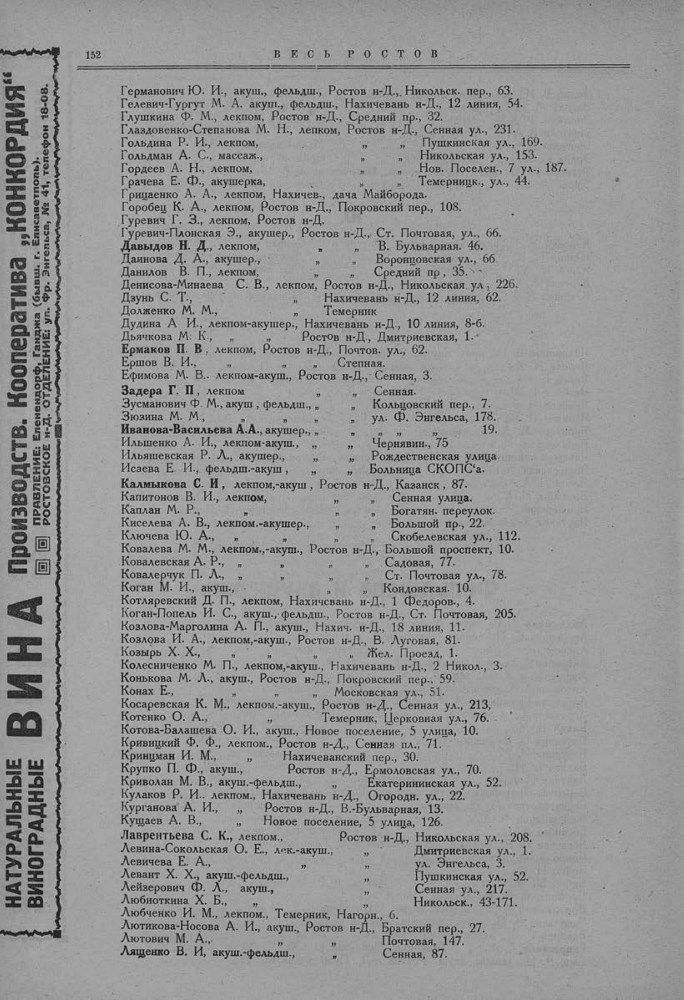

Лист источника 202
Скан

Распознанный текст
НАТУРАЛЬНЫЕ
ВИНОГРАДНЫЕ
ВИНА
Производств. Кооператива „КОНКОРДИЯ“
ПРАВЛЕНИЕ: Еленендорф, Ганджа (бывш. г. Елисаветполь).
РОСТОВСКОЕ н-Д. ОТДѢЛЕНІЕ: ул. Фр. Энгельса, № 41, телефон 18-08.
152
ВЕСЬ РОСТОВ
Германович Ю. И., акуш., фельдш., Ростов н-Д., Никольск. пер., 63.
Гелевич-Гургут М. А. акуш., фельдш., Нахичевань н-Д., 12 линия, 54.
Глушкина Ф. М., лекпом, Ростов н-Д., Средний пр., 32.
Глаздовенко-Степанова М. Н., лекпом, Ростов н-Д., Сенная ул., 231.
Гольдина Р. И., лекпом, " " Пушкинская ул., 169.
Гольдман А. С., массаж., " " Никольская ул., 153.
Гордеев А. Н., лекпом, " " Нов. Поселен., 7 ул., 187.
Грачева Е. Ф., акушерка, " " Темерницк., ул., 44.
Грицаенко А. А., лекпом, Нахичев., дача Майборода.
Горобец К. А., лекпом, Ростов н-Д., Покровский пер., 108.
Гуревич Г. З., лекпом, Ростов н-Д.
Гуревич-Плонская Э., акушер., Ростов н-Д., Ст. Почтовая, ул., 66.
Давыдов Н. Д., лекпом, " " В. Бульварная. 46.
Даинова Д. А., акушер., " " Воронцовская ул., 66
Данилов В. П., лекпом, " " Средний пр, 35.
Денисова-Минаева С. В., лекпом, Ростов н-Д., Никольская ул, 226.
Дзунь С. Т., " Нахичевань н-Д., 12 линия, 62.
Долженко М. М., " Темерник
Дудина А И., лекпом-акушер., Нахичевань н-Д., 10 линия, 8-б.
Дьячкова М. К., " " Ростов н-Д., Дмитриевская, 1.
Ермаков П. В , лекпом, Ростов н-Д., Почтов. ул., 62.
Ершов В. И., " " Степная.
Ефимова М. В.. лекпом-акуш., Ростов н-Д., Сенная, 3.
Задера Г. П, лекпом " Сенная.
Зусманович Ф. М., акуш , фельдш., " " Кольцовский пер., 7.
Зюзина М. М., " " ул. Ф. Энгельса, 178.
Иванова-Васильева А.А., акушер., " " " " 19.
Ильшенко А. И., лекпом-акуш., " " Чернявин., 75
Ильяшевская Р. Л., акушер., " " Рождественская улица
Исаева Е И., фельдш.-акуш , " " Больница СКОПС'а.
Калмыкова С. И, лекпом,-акуш , Ростов н-Д., Казанск, 87.
Капитонов В. И., лекпом, " " Сенная улица.
Каплан М. Р., " " Богатян. переулок.
Киселева А. В., лекпом.-акушер., " " Большой пр., 22.
Ключева Ю. А., " " " Скобелевская ул., 112.
Ковалева М. М., лекпом.,-акуш., Ростов н-Д., Большой проспект, 10.
Ковалевская А. Р., " " Садовая, 77.
Ковалерчук П. Л., " " " Ст. Почтовая ул., 78.
Коган М. И., акуш., " " Кондовская. 10.
Котляревский Д. П., лекпом, Нахичевань н-Д., 1 Федоров., 4.
Коган-Попель И. С., акуш., фельдш., Ростов н-Д., Ст. Почтовая, 205.
Козлова-Марголина А. П., акуш., Нахич. н-Д., 18 линия, 11.
Козлова И. А., лекпом,-акуш., Ростов н-Д., В. Луговая, 81.
Козырь Х. Х., " " Жел. Проезд, 1.
Колесниченко М. П., лекпом,-акуш., Нахичевань н-Д., 2 Никол., 3.
Конькова М. Л., акуш., Ростов н-Д., Покровский пер., 59.
Конах Е., " Московская ул., 51.
Косаревская К. М., лекпом.-акуш., Ростов н-Д., Сенная ул., 213.
Котенко О. А., " Темерник, Церковная ул., 76.
Котова-Балашева О. И., акуш., Новое поселение, 5 улица, 10.
Кривицкий Ф. Ф., лекпом., Ростов н-Д., Сенная пл., 71.
Криницман И. М., " Нахичеванский пер., 30.
Крупко П. Ф., акуш., Ростов н-Д., Ермоловская ул., 70.
Криволан М. В., акуш.-фельдш., " Екатерининская ул., 52.
Кулаков Р. И.. лекпом., Нахичевань н-Д., Огородн. ул., 22.
Курганова А. И., " Ростов н-Д., В.-Бульварная, 13.
Кущаев А. В., " Новое поселение, 5 улица, 126.
Лаврентьева С. К., лекпом., Ростов н-Д., Никольская ул., 208.
Левина-Сокольская О. Е., лек.-акуш., " Дмитриевская ул., 1.
Левичева Е. А., " " ул. Энгельса, 3.
Левант Х. Х., акуш.-фельдш., " Пушкинская ул., 52.
Лейзерович Ф. Л., акуш., " Сенная ул., 217.
Любиоткина Х. Б., " " Никольск., 43-171.
Любченко И. М., лекпом., Темерник, Нагорн., 6.
Лютикова-Носова А. И., акуш., Ростов н-Д., Братский пер., 27.
Лютович М. А., " " Почтовая, 147.
Лященко В. И, акуш.-фельдш., " Сенная, 87.